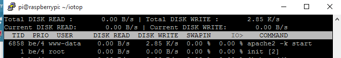

The OEM team have been discussing the v9 low-write mode, and trying to decide how best to protect SD cards from fatigue and early failure.
To put this in perspective, a v9 standard installation with 7 or 8 feeds produces a SD card data 'write' figure of about 9kB/s, whilst if 'low-write' mode is activated with default settings this drops to less than 6kB/s. By stopping Redis, emoncms & apache logging, plus increasing the write buffer to 600 seconds (instead of 60) the SD card data 'write' figure drops dramatically down to about 500 B/s.
In the previous version of emoncms, the low-write version made further changes to protect the SD card, by not only switching off the logs, redirecting other less intrusive logs to a tmpfs (held in RAM), and also further partitioned the SD card putting the operating system in 'read only'.
Advantages to applying the same protection in v9 are that it provides the best possible option to long term protect SD cards from fatigue and unexpected power failure corruption, and has been proven to work well in the previous version.
However, the downside is that it would add significantly to the build guide and introduce opportunities for mistakes to be made during installation, or deter people due to the added complexities. Also, especially now as IoT expands, people are using complementary software such as node-red, Mosquitto, MQTTwarn etc, alongside emoncms, and just question how they would co-exist in a read only environment.
We would value your thoughts on this please.
Paul
Re: Low-write mode - your thoughts please
I abandoned low-write long ago in favour of a HDD solution with the extra flexibility that brings, I also use the MySQL engine for all my feeds, again for the extra facilities that allows. I have experienced a number of SD card corruption events but only 1 whilst using a HDD based Emoncms which was due to a power outage that incidentally also took out 2 windows PCs and their HDDs.
Re: Low-write mode - your thoughts please
Another HDD user. Never had an SD card corruption but then I've always used an HDD.
Of course it's a bit more expensive as a solution both in terms of hardware and power requirements but for me a theoretically more stable solution. I say theoretically because I've just switched from an old pi with rfm12 to a pi2 with rfm69 and it's much flakier. While we were away recently the system just stopped receiving data from my emonTX. It was still receiving data from an esp8266 via WiFi though. And I've noticed that if I reboot the router that the pi doesn't reconnect. So will have to track down what's going on. I'm on V9 rc2 and its not a power issue as I have purchased a recommended USB hub.
Re: Low-write mode - your thoughts please
I switched to an HD when my first SD card died (after only 3 months). I use a Toshiba 320GB 2.5 inch drive that draws 0.8W at idle, 2.5W max at spin up, and 1.5W during r/w ops. (drive is powered from a hub) I run it 24/7 and it's been rock solid for almost 3 years. As Paul mentioned in a post a couple of years ago (if memory serves!), one of the added bennies is a file server to store stuff on.
Re: Low-write mode - your thoughts please
I think that we are all agreed that running emoncms on a HDD is the best solution, but we still have to cater for users who wish to run emoncms on a SD card in low-write mode.
I'm trying to establish the pros & cons of making the OS read only, and balancing the obvious benefits against the points described in the first post above.
When power is unexpectedly removed we know that disk corruption occurs only when the OS is writing to the disk, so if we can reduce disk writing to a absolute minimum, is there then any need to make it read only? If nothing is being written, would there be any benefits?
It could be considered 'belt & braces' but I'm trying to balance that against the points made in my first post.
Paul
Re: Low-write mode - your thoughts please
so if we can reduce disk writing to a absolute minimum, is there then any need to make it read only?
There might be. Unless we know for certain there are no writes to the drive, i.e. we're in r/o mode, the OS will make occasional writes to take care of routine things like file and dir atime, inode table maintenance, etc. Granted, the frequency of those writes will likely be quite low, but the chance for data corruption still exists. Reads and writes from/to the drive can be monitored with: cat /proc/diskstats. Here's how the 11 columns break down.
It could be considered 'belt & braces'
Nothing wrong with that. Given some users have systems located in remote, or distant locations, erring on the safe side would be the prudent thing to do.
node-red, Mosquitto, MQTTwarn etc, alongside emoncms, and just question how they would co-exist in a read only environment.
It would seem the current method of switching from r/o to r/w, and back, would be the easiest solution, provided those apps can exist in a read-only environment once configured.
Re: Low-write mode - your thoughts please
I agree with most of that Bill, but it still leaves the two main issue which I raised; the added complexity for users building the system (creating partitions etc), and compatibility with other software. And trying to 'balance' those two issues against creating a 'belt & braces' stable system.
I was hoping to find a compromise by leaving the system in RW and taking disk writes to an absolute minimum by directing the /var/log & /tmp to tmpfs, so any log/housekeeping writes are held in RAM, but I'm struggling with the Ext4 jbd2 journal, which every few seconds writes a chunk of about 7kB to disk.
I'm in the process of trying to disable the root journal using the tune2fs 'has_journal' function, and am almost there.
If this could be achieved, I believe that the 'balance' would shift towards leaving the OS in RW.
Paul
Re: Low-write mode - your thoughts please
Hi Paul,
Here's some insight on running ext4 with a minimum of idle disk writes:
unix.stackexchange.com/questions/96517/minimizing-idle-writes-on-a-file-system
fenidik.blogspot.com/2010/03/ext4-disable-journal.html
All else failing, you could use ext2.
Re: Low-write mode - your thoughts please
Cheers Bill, I've now disabled the journal which has made a big difference.
The only other thing I've got writing to disk, albeit every 15 - 30 seconds or so is;

The command is apache2 -k start, which writes about 3 kB. Stopping apache does stop the disk writes.
If I follow the PID id number, it points to /usr/lib/apache2/mpm-prefork/apache2
Any ideas?
Paul
Re: Low-write mode - your thoughts please
Would a compromise of recommending a USB flash key a storage help? The benefits of an externally exchangeable data-store, no writes to the internal OS SD card and cheap as chips to procure and to replace and maybe recommend keeping the old one as a data backup?
Re: Low-write mode - your thoughts please
Thanks Peter, however the data writes aren't that much of an issue, as we can control that by increasing the feed write time in emoncms. It's the disk writes from the OS, apache, redis etc. that we need to control.
Paul
Re: Low-write mode - your thoughts please
Thanks Paul for starting this thread. Both Glyn and I use SD cards for all our logging Im happy now with their reliability and the added benefit of a cheaper and neater install, plus small reduction in power consumption is nice.
On the subject of filesystem types, the ext2 filesystem with a blocksize of 1024 bytes rather than 4096 bytes is currently used on the SD cards for the data partition. I wrote this note at the time:
https://github.com/emoncms/emoncms/blob/low-write/docs/install.md
"We create here an ext2 filesystem with a blocksize of 1024 bytes instead of the default 4096 bytes. A lower block size results in significant write load reduction when using an application like emoncms that only makes small but frequent and across many files updates to disk. Ext2 is choosen because it supports multiple linux user ownership options which are needed for the mysql data folder. Ext2 is non-journaling which reduces the write load a little although it may make data recovery harder vs Ext4, The data disk size is small however and the downtime from running fsck is perhaps less critical."
The write load investigation I did here compared a 512 byte block vFAT filesystem with a 4096 byte block ext4 system. https://github.com/openenergymonitor/documentation/blob/master/BuildingB.... The ext4 filesystem had a write load of around 8x the vFAT load. Every 4 byte datapoint write results in two blocks of write load one block for the inode and one for the data. A 512 byte block filesystem results in 1024 bytes per update where the data size to be updated is less than 512 bytes (even if its 4 bytes). A 4096 byte block filesystem results in 8192 bytes being written even if the update is only 4 bytes.
Buffering brings the data size to be written to disk closer to the block size. But even 10 minutes of 10s data (per feed file) is only 240 bytes, ~23% of 1024, 5.8% of 4096. So using the smaller block size can still provide a large contribution to reducing write load.
Im quite keen to err on the safe side in terms of keeping a read-only image for the operating system but I am open to the fully writable partition option if we feel the benefits are marginal.
Re: Low-write mode - your thoughts please
I also use the low write SD card version and also like the read only file system.
Even if the card does have bad blocks, the file system will still boot and the system recovered.
I replicate the data into a cloud backup, so if the card goes bad, I swap it and restore (not happened yet).
I also like there are no moving parts - although SSD's are very cheap now.
Re: Low-write mode - your thoughts please
Trystan, I thought SDs have 4KB erase block size, meaning if you use 1KB size it will write a SD block 4 times in worst case, where it would only need to write one if partition block size is correct.
Then I saw this link https://wiki.linaro.org/WorkingGroups/KernelArchived/Projects/FlashCardS... that says block size can be different for different memories sizes and brands. Many diferences now a day.
Also check: https://wiki.gentoo.org/wiki/SDCard
Dont forget partition should be aligned to SD blocks boundaries.
Re: Low-write mode - your thoughts please
If I follow the PID id number, it points to /usr/lib/apache2/mpm-prefork/apache2
Any ideas?
Paul,
I'm still looking to see if there's a way to redirect those writes to a tmpfs mounted directory.
Re: Low-write mode - your thoughts please
Thankyou Chaveiro, I was not aware of that. I will have a good read of the articles, it sounds like I was mistaken.
Re: Low-write mode - your thoughts please
I've done a video update so that you can see the amount of data that emoncms in low-write mode actually writes to disk.
It's a standard v9 installation with the following changes which are very easy to implement;
The filesystem is still in RW, which allows companion software to run (although this should be discouraged), and also from a user perspective, there is no requirement to shrink/create volumes, etc during installation - keeping it simple.
Of the frequency that data that is written to disk, you would be very unlucky to have a power failure at that precise time, and cause a disk corruption, also the amount of data written is unlikely to cause disk fatigue.
Paul
Re: Low-write mode - your thoughts please
The command is apache2 -k start, which writes about 3 kB. Stopping apache does stop the disk writes.
The only thing I have been able to find about the -k switch says:
"The -k option is used to run Apache as a service on Windows and takes a command as an argument."
(I got curious as to why -k wasn't listed as an option on the Apache man page)
Re: Low-write mode - your thoughts please
Thanks Bill, I suppose this raises another question, presumably apache is writing this data for a reason, if so, and the OS is mounted RO, what is the detrimental effect of not being able to write it?
Paul
Re: Low-write mode - your thoughts please
I run the EMONPI image on a Pi2 alongside Openhab and appreciate the reliability the mainly read only file system brings as well as the ability to pull the SD card and switch to another in the rare event I'm trying something out. I've kept away from adding a hard disk as I don't want to add in an extra enclosure or layer of complication. I run a 32GB Sandisk Extreme SSD with plenty of free space as I'm relying on wear leveling to keep my 42 feeds alive for many months to come.
Having a large portion of the OS read only has meant everything came back OK after a couple of unexpected power cuts. Unfortunately a combination of largely overhead power lines, big trees and large storms makes my installation vulnerable to sudden power loss, and I'd rather not spend the morning after frantically googling to see whether it can be brought back to life by swapping the card into one of my Windows Machines
Re: Low-write mode - your thoughts please
Hi Kevin, you may recall that historically, 'emoncms' had a number of variants, which over the past 6 months has distilled to a single version, with options in the 'settings' to change the way emoncms functions; low-write/full write, MQTT, etc. but all variants now start with a standard install, which can be changed at a later time.
For example; as a new starter to emoncms, you install v9 emoncms with the low-write option (as the OS is on a SD card), but later buy a USB HDD and change to full-write, add MQTT, Node-red, maybe a blog, media server, etc. you are able to upgrade/degrade without making major changes. Other advantages are that one version is much easier to maintain, develop & support, and combining functionality is more energy efficient.
There will always be disk-writes to the SD card, as the emoncms data needs to be stored, but what is the difference between a filesystem that does not write data to disk, and a system which is RO?
In my example in the post above, there are some disk writes, but compared with a standard install, they are minute, so maybe it's worth the compromise to have just one system which is easy to install (not everyone has the same competence!), have options to add other software, and be free to upgrade/downgrade at will.
This is just my personal opinion, T & G will have the final say, but good to hear that RO works for you.
Paul.
Re: Low-write mode - your thoughts please
Thanks Bill, I suppose this raises another question, presumably apache is writing this data for a reason, if so, and the OS is mounted RO, what is the detrimental effect of not being able to write it?
Turns out the -k switch is valid under Linux. Took me awhile to find the answer.
Now to try and determine the answer to the question above.
Re: Low-write mode - your thoughts please
Paul,
Thanks for the reply, having one single branch that is then modified based upon usage makes sense.
Most operating systems have a RW file system which at the least should be checked after an outage, and is vulnerable to corruption by incomplete writes as the power goes down or the system crashes. As I understand it mounting the OS partition RO means no checks are necessary after a problem as nothing could have changed or become corrupted by incomplete writes to the card / disk. I'm not sure how often you get corruption from power loss or just generally from things going wrong with a Pi, but on mine with V8.5 V Low Write the powers gone unexpectedly about 4 times so far with no problems that I know of. This is a great result for a computer, but also the expected behaviour of a domestic appliance.
My suggestion is a system similar to the shipped image? with a RO OS Partition, the option to put all logging in RAM or perhaps on a memory stick, and a general RW area for programs that need it. I'm assuming the logs auto limit their sizes?
Modern file systems are way better than the file allocation tables of old, but an unexpected power cut can cause bad problems regardless of whether a SD Card is used or a hard disk. Indeed I recently had a loose SSD power cable in my desktop that killed Windows 10 beyond what it could recover from.
Having delayed, consolidated disk writes is a great idea for both SD card longevity and performance, as long as it doesn't leave anything partially written and that the system can work with all the data whether written or not.
Problems arise when someone needs to install software that insists on having RW access to the whole file system so perhaps a script can be provided to permanently switch between modes?
Getting Openhab to work involved giving it a separate partition mounted in /home/pi that it can play in, even though the bits it writes to are very small now I've managed to get it to log to the temp directory.
Just my 10 penneth - hope its useful!
Kevin
Re: Low-write mode - your thoughts please
I'd suggest starting from a different point - who is the target audience.
If the EmonPi is aimed at the wider population that just want something that works, then a minimal install image that prolongs the SD card life is the prime driver. However it is then configured (perhaps minimal local logging - use emoncms.org) this then comes with a warning that the life of the card cannot be guaranteed in any other configuration. I'd suggest this is not a Raspbian image but an absolute minimum (keeps size of card low as well).
If you want to provide for the more 'hobbyist' client then a more complicated instruction set should not be an issue (they will be happy to ask questions). The majority of these hobbyists may be using a HDD already so the effort in supporting a low write SD image may not be the best use of scarce resources. I note that the install instruction now have a set of instructions to move an SD card setup to an HDD which is really great (not tried it though).
Personally, I use one Pi for lots of different things and moved to a HDD a while ago (after a card failure). I have just done a new minimal install (direct to HDD) from the raspbian-ua-netinst on github and then installed emoncms and emonhub. I'll be moving the other stuff across soon.
I think it is partly a decision on where the overall product line is being aimed at.
$0.01 worth.
Brian
Re: Low-write mode - your thoughts please
@borpin123 - who is the target audience?
This is foremost in my mind, and of course not all users have the same competence/confidence, therefore we need to structure the installation process to be achievable for the wider majority. Having just read sheppy's post (above yours) it's clear that he is fairly knowledgeable and confident about creating/resizing partitions, even adding yet another partition for other software, but many users would find it difficult to do, or be put off by the size of the guide.
I'm not enthusiastic about creating a second (more complicated) guide, as that would deprive the less competent users of those features, and also make support more difficult as we would then have 2 quite different systems.
Paul
Re: Low-write mode - your thoughts please
Hi Paul,
Not suggesting different systems as such, just that the starting points are different. The ready to go is just that. A simple system, pre-installed, that is not designed to be fiddled with, but for it to just work and be reliable. It (should) provide a web interface for configuration and adding modules etc. No specialist knowledge needed. It may even not immediately provide for any local logging but assume that emoncms.org will be used.
If the user subsequently wants more, as with any Linux system, the world is your oyster and TIMTOWTDI. The trick then is to get good clear coherent documentation to support this desire. Unfortunately, as is usually the way, the documentation is lagging.
The current basic install instructions are very good. I did not try a low-write system but I'm hoping if I had, that would have worked well as well. The bit perhaps that is missing is explaining to a new user, the different configurations they may want and why they may want them up front.
I have then fallen over a lack of clear instruction on converting inputs to suitable feeds and (now) how to install modules.
I think the premise of a single system is right and, as long as it remains possible, the other types of install can be done by those with some knowledge or ready to learn.
Cheers, Brian
Re: Low-write mode - your thoughts please
Hi guys,
Thanks a lot for lots of good opinions on this topic. I've been enjoying reading over past few days
borpin123 has hit the nail on the head thinking about the target user. My feeling is to be on the cautious side and make the SD card image we ship with the emonPi as bulletproof as possible. Yes, it will be trickier to setup but once up and running, it should result in a more stable resilient setup. We are now well into our 2nd 1K PCS production run of emonPi'. Many of these users just use the unit 'as is' therefore won't be inconvenienced by the hassles of running a RO file system.
We have started building and testing a new SD card image, I've posted the latest feature set list there so that this thread doesn't go too much off topic (http://openenergymonitor.org/emon/node/11407). As my post on the build thread mentions, we are considering having nodeRED and openHAB pre-installed and configured with a skeleton setup to pull in data from emonhub MQTT. IMO, the read-only file system is even more important when adding other services as it's a safety net against the possibility of a service going to town on file writes behind the scenes without us realising and reducing the life of an SD card.
We are keen to have a standardised installation procedure across the ready-to-go SD card and install guides with the idea that it will be easier to maintain as most systems will be generally running the same thing. We are open to a non read-only OS if there was broad support, but feel that it's probably better to err on the side of a cautious, read only approach.
Re: Low-write mode - your thoughts please
Trystan,
I think you are right for the EmonPi (KISS principle), but a RW OS is needed. You could assume that these will all be HDD based and produce an HDD image like you did before. Having said that, I used the rasbian-ua-install (which I suspect is much the same as the Minibian) partly as it would install directly onto a HDD and a 256Mb Micro SD and followed the emoncms install instructions without any great hassle.
What I do need to work out is how to install modules :)
Key I think is maintaining the documentation and helping folks upgrade (take them with you). for instance, you mention Emonhub MQTT; is that different to the older emonhub?
I'm looking forward to playing with node-red and openhab though I'm not yet clear in my mind how they interact.
Cheers. Brian
Re: Low-write mode - your thoughts please
Hi Chaps,
I've only just noticed this thread, sorry for reviving a zombie!
This problem was fixed years ago by others, I dug all the info up nearly four years ago for My Little Server (tm) :)
Some background - I run an Asus EEE 701 (the original netbook) as my server at home (cheap, low power usage, enough horsepower), it only has 4GB of SSD/Flash for the OS which wasn't big enough. Wanting to use it without spinning disks 24/7, I used the SD card slot to extend the storage. Clearly this would have the same issues as the RaspPi, hence my investigation into minimising writes to SD card. My server runs home automation software which writes to the SD card every 60 secs for it's main log, and several times every 5-10 secs for many other logs. It also runs a full mail server, webmail, Apache, FTP, NFS/Samba shares, weather station software (SQL db) and all the logging that goes with them. So this solution really works and has done for nearly four years on the same 8GB Sandisk SD card.
Basically the OS (Ubuntu Server - similar to Debian used on the Pi) was installed on the 4GB internal flash on the EEE, then the /OPT and /VAR where moved to the SD card - This is of course different to the Pi's situation but the principle is the same. My notes from the install are a bit chaotic but here goes...
1) Aligning the SD Card
SD cards aren't like harddrives, SD cards erase/write 128KB blocks of storage at a time, which means even if one byte of data in a block changes, the whole block is erased and rewritten. If the file systems blocks are mis-aligned to the SD card hardware blocks, that one byte change to the FS block will actually erase/rewrite two SD blocks, slowing everything by a factor of two and also causing twice the wear on the SD card. Not optimal.
sudo fdisk -u -l /dev/sda
Will show you something like -
Device Boot Start End Blocks Id System
/dev/sda1 * 2048 7813119 3905536 83 Linux
That start block is 2048 and is a multiple of 128, so it's aligned with the SD hardware block, which is correct.
Start blocks like 63 are common but anything not a multiple of 128 is mis-aligned and must be fixed before moving on. DD the partition off the SD card, FDISK the SD card to move the partition to the correct boundary and DD the patition back.
2) Add noatime and commit on your FSTAB / mount.
This makes the OS not track read access (modified date/time) to files and buffers the writes to the card for longer.
edit /etc/fstab
UUID=your_uuid / ext4 defaults,noatime,errors=remount-ro,commit=180 0 1
3) You can set up a RAMdrive to hold temp files - depends on your free RAM
# mount a RAM disk in FSTAB
tmpfs /tmp tmpfs defaults,noatime,size=128M 0 0
There are many examples which use nosuid,nodev,noexec,mode=1777 but I found this caused problems with APT updates. YMMV.
4) Tune the system for SSD usage
Now to the real magic. These settings basically turn down the OS's urge to swap stuff out of RAM to SD swap space (if you have some), turn on laptop mode to minimise disk writes and then really tune the 'dirty write' settings.
These settings control flushing unwritten data in RAM back to permanent storage. Normally this is about every 4 seconds. These settings crank that up to three minutes. With sequential writes, which log files are and I suspect that the EmonCMS database writes are, the write will now sit in the file buffers in RAM and be added to every few seconds (in RAM) until they are flushed by the dirty write. Meaning that normally the blocks should be pretty full actually minimising rewrites of the same block as well as writing them less often.
Now I admit this can cause issues in the event of a power cut, in theory you could lose three mins of data, statistically more like 90 seconds. BUT is that really an issue? How many power cuts do you *really* get? In reality it will more likely lessen data corruption as power is far less likely to go out *during* a write.
edit /etc/sysctl.conf
# specific tuning for flash drive
vm.swappiness = 0
vm.laptop_mode = 0
vm.dirty_writeback_centisecs = 18000
vm.dirty_expire_centisecs = 18000
vm.dirty_ratio = 10
vm.dirty_background_ratio = 1
5a) Change the kernel I/O scheduler
I see from various places then everyone seems to use the DEADLINE elevator on the Pi, for the workload of my server (which would seem similar to the EmonPi) NOOP didn't cause any slower I/O but did reduce CPU workload. Given the small CPU on the Pi, this would seem a better fit.
edit /boot/cmdline.txt and change
elevator=deadline to elevator=noop
After a reboot - check it has stuck
cat /sys/block/sda/queue/scheduler
5b) For some machines grub editing doesn't seem to work properly, in that case try this -
edit /etc/rc.local
echo noop > /sys/block/sda/queue/scheduler
Put this line before the exit 0
After a reboot - check it has stuck
cat /sys/block/sda/queue/scheduler
All these setting overlap to some extent, but have been working for a long time.
Sorry for the epic post - hope it helps,
V.
Re: Low-write mode - your thoughts please
How many power cuts do you *really* get?
Hi Mark,
Here in rural Oklahoma, USA, the power can be very flaky. I've seen it go off-line 3 times in the span of an hour. I've lived here for three years, and have yet to see a stretch of more than a few months without power loss. There's a few posts on the forum from users in rural UK that have made similar comments about power that's not very reliable.
edit /etc/default/grub
The Pi doesn't use the Grub bootloader. The I/O scheduler is specified in /boot/cmdline.txt
I see from various places then everyone seems to use the DEADLINE elevator on the Pi
Regarding the I/O scheduler, this post says Noop is appropriate only for true SSDs, and that Deadline incorporates the elevator algorithm which groups spatially near disk accesses when possible.
Regards,
Bill
Re: Low-write mode - your thoughts please
Hi Bill,
OK you got me! :) I'm thinking primarily of the UK, we get power cuts but very rarely.
That said, the rest of it still stands, there will still probably be less chance of FS corruption during a power cut. Have you had any SD card corruption from your frequent power outs?
As to grub, I stand corrected, I don't use a Pi for EmonCMS, so I've not done this stuff on a Pi. I've updated the post above to keep it accurate and in one place.
I read about Deadline at the time, I'm not sure it makes that much difference in my use case (or EmonCMS on a Pi using the same set up). The writes are so infrequent that the lower CPU usage was more important to me. That said, perhaps if the only thing running on the Pi is EmonCMS and you have the CPU headroom, the tradeoff in SD longevity is worth the CPU usage?
V
Re: Low-write mode - your thoughts please
Have you had any SD card corruption from your frequent power outs?
I switched to a USB HDD about two years ago. (My 8GB SD card died after ~3 months) So far, the ext4 filesystem has been able to recover from power hits via the journal.
Good info in your post, nonetheless.
Re: Low-write mode - your thoughts please
Thanks Vster, lots of interesting stuff there. I'll review our image build with your notes in mind
Re: Low-write mode - your thoughts please
Hi Vster:
Taking a look at your point 1.) :
sudo fdisk returns:
and:
As the /boot partition starts at 16 am I correct that this is not aligned, as it's not a multiple? How can I correct this? Will this need to be done on the same SD card at we indeed to ship with? Will this vary between SD cards?
Point 2.) & 3.)
Yup, we already mount with noatime
Yes we mount /var/log to tmpfs using: nodev,nosuid,size=30M,mode=1777. We have not had any problems with this. I notice you use tmpfs /tmp tmpfs defaults,noatime,size=128M 0 0
The fstab is as follows :
Point 4.)
I think I will leave this one out. The emonPi could be unplugged / lose power at any moment. Even though we recommend users to shut down properly, I'm not sure how often this happens in practice! We also ship to many countries where power is not always the best quality and blackouts are common. Even in the UK (in rural N.Wales) we get power cuts often in the winter months.
Point 5a.)
Elevator
Changing elevator from deadline to noop sounds like a good idea. Also recommended in this article:
https://fiasko-nw.net/~thomas/projects/rpi/writeless.html.en.
I made the change then checked using
pi@emonpi:~/emonpi$ cat /sys/block/mmcblk0/queue/scheduler
[noop] deadline cfq
therefore no rc.local edit is required
Copies if fstab, rc.local and cmdline.txt are in the emonPi git repo: https://github.com/openenergymonitor/emonpi
Re: Low-write mode - your thoughts please
Glyn,
Here's another system logging option. busybox-syslogd puts the system logs in a circular ram buffer. (the size is configurable) Log contents are read via the logread command. (part of the package) Here's a synopsis:
With a circular buffer, there's no "out of ram" issue. Log rotation is built in.
Re: Low-write mode - your thoughts please
Thanks Bill, that looks interesting. However I'm happy with logrotate at the moment
Re: Low-write mode - your thoughts please
Hi Trystan,
1) You are correct in that the logical/physical blocks are mis-aligned and therefore causing twice the wear on the SD card.
I'm a Linux guy so I'd use DD and Fdisk to move the partitions data off the SD to HD, redo the partitions then move the data back. But it's probably easier just to use GPARTED, it's part of the Ubuntu desktop (which I think you use) or can be booted off CD and used as a live OS. GPARTED is graphical tool to create/move/delete partitions around. Move the P3 up a bit, then P2, then P1. Leaving P1 aligned on say 2048, will correct the issue.
I assume you just copy a file image to the SD cards that you ship? If that's the case just create a new image from the updated SD card (it will just have a bit of wasted space at the beginning but otherwise be identical).
No, it won't matter between SD cards, only the length/size matters (some SD cards are slightly smaller/larger than others for a given size), as this image os only 3.6GB that's not an issue.
2/3) Interesting, it may be an Ubuntu vs Debian thing. There is a commit= line in there you may have missed.
4) I understand your concern, but this is the real magic. It cuts writes by orders of magnitude. As I mentioned, I suspect it may actually prevent corruption by minimising writes, because as well as writing less often (once every three mins) it writes once instead of say 100 times (one block of 100 rows, rather than 100 blocks of one row). It may be worth running a few tests, yanking the power out and seeing which gets corrupted first with/without the patch. I've been running it for nearly four years and never suffered any loss of data/corruption, there have been several hard power downs due to electrical work/bad coding/bad wiring.
5) Interesting page, I've taken NTP logging off my server too. He also use the dirty.write fixes. May be worth reaching out to him to get his experience of running it on a Pi?
Re: Low-write mode - your thoughts please
Thanks for your help,. It was easy to use gparted to align the partition. There was an align to cylinder option. Also added commit=180 to fstab
Re: Low-write mode - your thoughts please
Hi Trystan,
The commit=300 will help, but it's only doing half the job. Commit specifies a maximum write commit timeframe that the OS uses, programs can still call fsync to flush the file buffers, sidestepping the OS commit timeframe. More importantly I forgot to mention (sorry!) commit only works for EXT4 partitions, if you're storing data in the third EXT2 partition, the commit parameter will be ignored.
I can't think of a way to test the benefit of the just using the commit (without the dirty.writes) other than to plug in USB hard drive, move the OS to it, and then watch the HDD LED, it should only flash every three mins in normal use (I suspect). Or perhaps someone who is using a HDD can add the commit temporarily to test it?
Hope that helps.
Re: Low-write mode - your thoughts please
It was easy to use gparted to align the partition. There was an align to cylinder option. Also added commit=180 to fstab
Hi Glyn,
Did you use align to cylinder, or align to MiB?
Re: Low-write mode - your thoughts please
@Vster Ah, we do use ext2 for our data partition therefore, commit will have no effect.
@Bill I used "align to cylinder" option in Gparted. Is this correct?
Re: Low-write mode - your thoughts please
I used "align to cylinder" option in Gparted. Is this correct?
Unfortunately, no. You want the MiB option.
Re: Low-write mode - your thoughts please
Ah, ok. I've done some reading up on the Gparted manual and your totally correct. However looking at the effect of the alignment operation:
Before
After
The first partition now starts at 4096, since this is a multiple of 128 am I correct in thinking that this is now aligned to the SD card 128KB blocks?